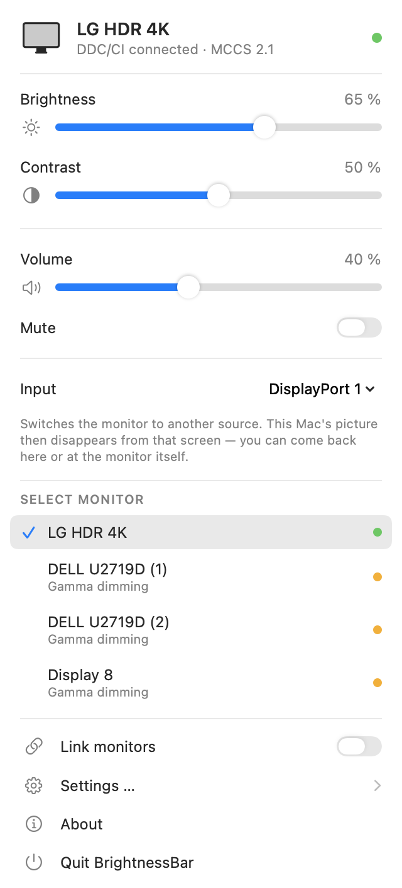
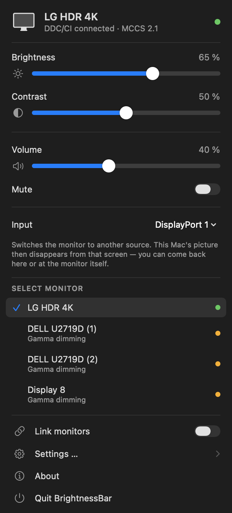

BrightnessBar
Brightness, contrast and volume of external monitors — on the display itself.
macOS only adjusts brightness on built-in panels and Apple's own displays. On an ordinary external monitor the sliders do nothing. BrightnessBar talks to the monitor directly over the I²C channel of its display connection and sets the same values its OSD menu does.
Requires macOS 14 or later and a Mac with Apple Silicon. Not notarized — right-click → Open on first launch. The interface follows your system language — German or English.


☀️ On the monitor itself
Sets brightness, contrast and volume over DDC/CI — the same values the OSD menu sets. The backlight really does go down; the image is not merely darkened.
🖥️ Several monitors
Finds every connected display on its own and shows, per device, how it is being driven.
Backlight over DDC/CI
Gamma dimming as a fallback
⌨️ Shortcuts
Act on the monitor under the pointer, system-wide and without extra permissions.
⌥⌘↑ brighter ⌥⌘↓ darker with ⇧ in finer steps
🔊 Sound from the monitor
Monitor speakers over DisplayPort or HDMI often report no volume control to macOS at all — the keys then just show the crossed-out symbol. Over DDC it works anyway.
The volume keys only take effect when the sound is actually going to the monitor. Headphones and speakers stay with macOS.
🔒 Sparing with permissions
Brightness, contrast, volume and the shortcuts all run without any permission. Screen Recording is never requested.
Only mapping the keyboard's media keys as well needs a one-time Accessibility exception. That feature is off by default.
⚙️ Configurable
Launch at login, optional Dock icon, slider colour, gamma dimming as a fallback — and a settings window that explains every option.